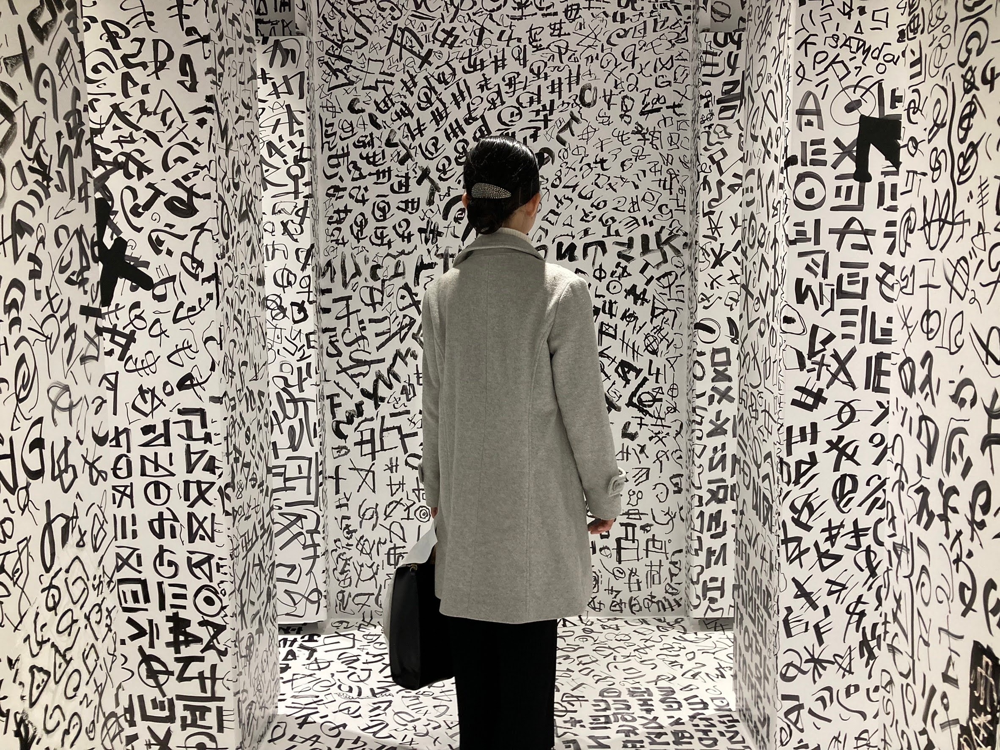
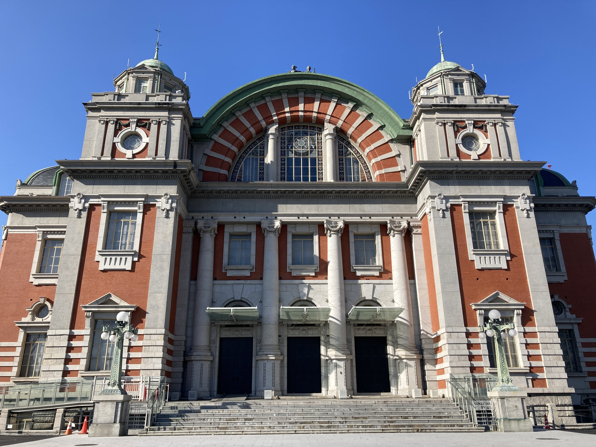
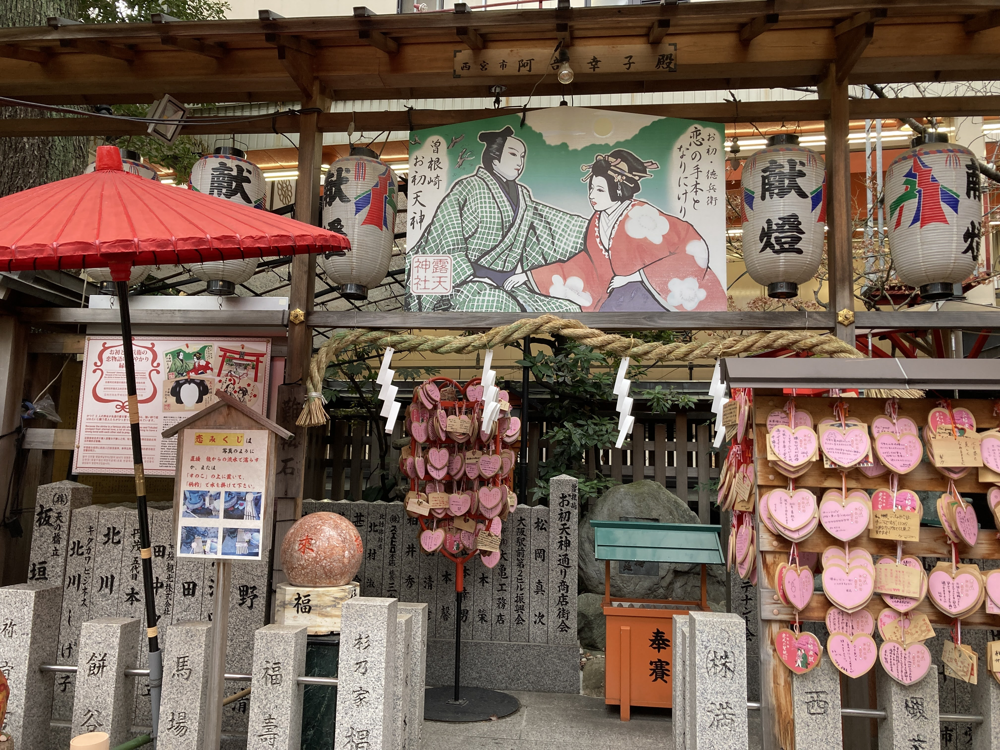
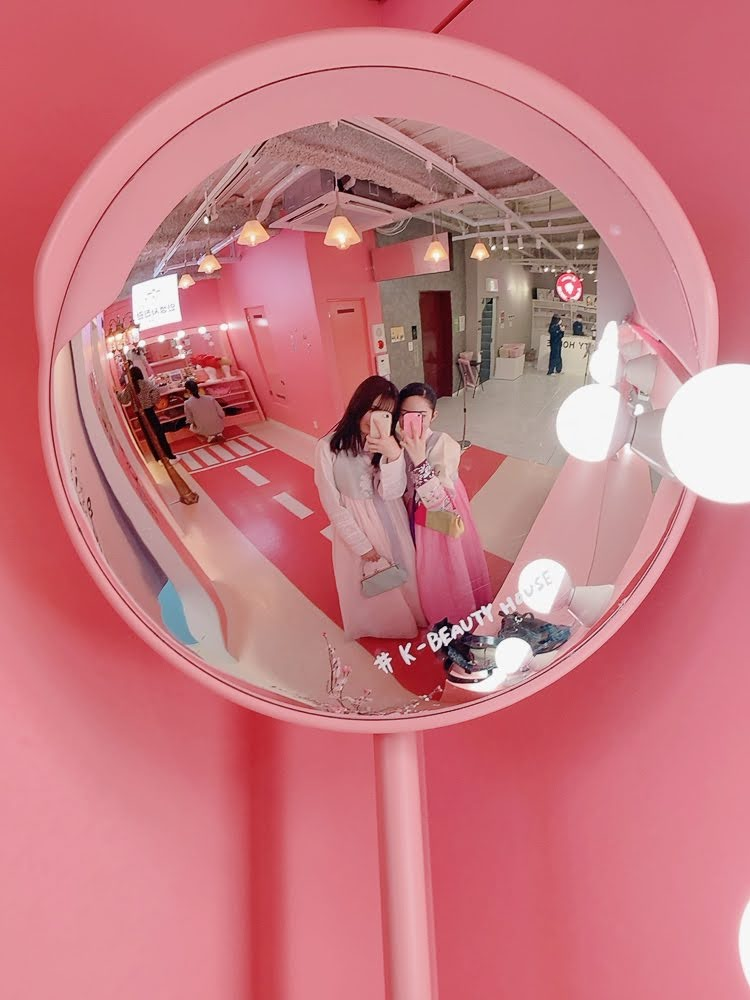
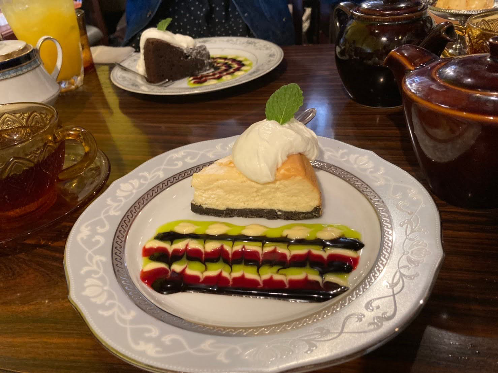
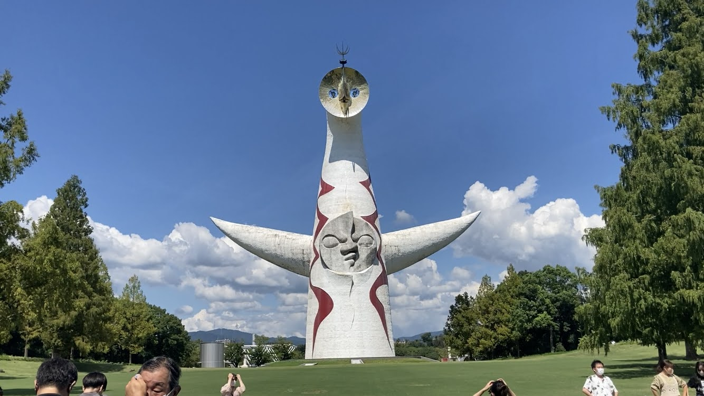
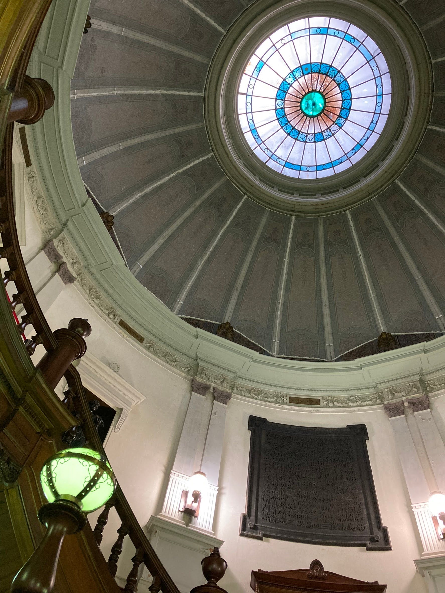
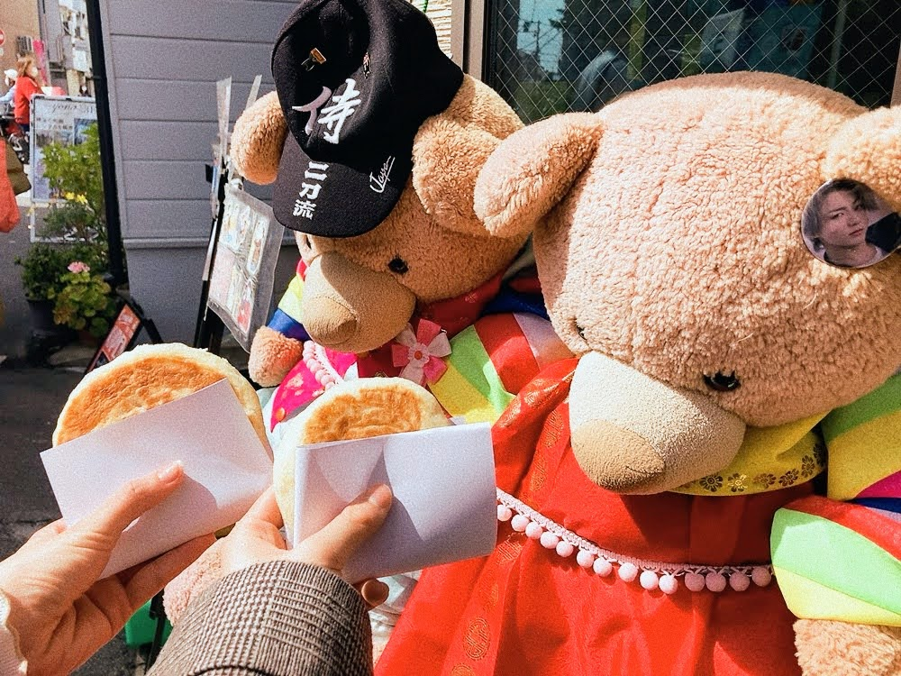
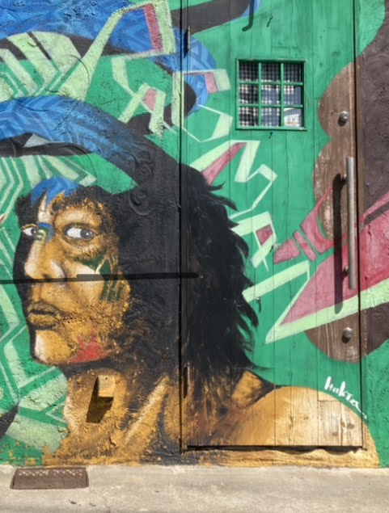
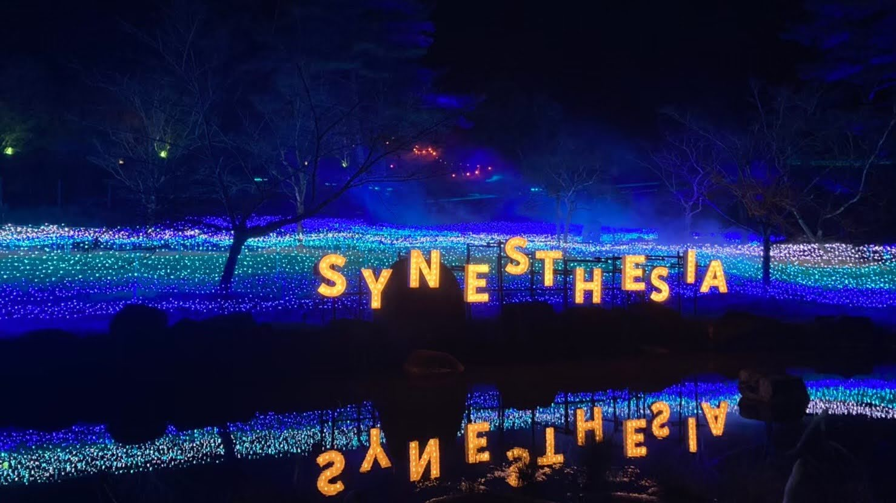

About
Yumeno
情報系のゼミに所属している大学生です。
大学ではプログラミングや情報数学、ネットワーク、マーケティングなど様々なことを学んでいます。また、音楽鑑賞、料理、可愛いものを探すことが好きです。
Skill：JavaScript、p5.js、HTML、CSS、Photoshop、Illustrator、Premiere Pro
御朱印を集めています
Works
（ Please touch☟☟☟each work ）

November, 2021
使用ソフト：Photoshop・Illustrator
駄菓子のカタログです。レトロな雰囲気にするために、背景に古紙の素材を使い左上にはレモンのイラストを描きました。また、画像の大きさや向き、色のバランスをよく考えて作っていきました。(1年後期,デジタル表現入門)

March, 2022
コマーシャル映像の写真を用いた企画説明です。私はスープジャーを取り上げました。
スープジャーは使う人のライフスタイルによって様々な活用の仕方があると思いました。この8つの写真でスープジャーのある豊かな生活を提案しています。(2年前期,デジタル表現の事前課題)
January, 2022
使用ソフト：Photoshop・Illustrator
パッケージデザインのプレゼンテーションシートです。商品の特徴や商品名、ペルソナを自分で決めた上でパッケージデザインを考えていきました。また、商品名や商品の特徴を活かしてオリジナルキャラクターも作りました。(1年後期,デジタル表現入門)
June, 2021
使用ソフト：Photoshop
私の頭の中の世界を表現したコラージュ作品です。今まで観てきた映画やアニメ、好きなキャラクターやアーティストを賑やかに貼り付けました。(1年前期,フォトレタッチ基礎)
November, 2022
ニット帽やマフラーを着用することで2.5次元マスクをつけても自然に見えるようにしました。また、昔からあるこじんまりした映画館が素敵だと思ったので、この場所を背景にしました。(2年後期,感覚の情報)
Photos
（ Please touch☟☟☟each photo ）
|

ここはどこでしょう。この場所はなんと、大阪中之島美術館のトイレです。全面が記号で埋め尽くされていて、とてもお洒落な場所でした。 |

この場所はどこでしょう？正解は大阪市中央公会堂です。煉瓦づくりの建物で、まるでヨーロッパを訪れているような気持ちになりました。 |
友人と出かけた時に撮影しました。よく晴れていたので、くっきりした影を撮ることができました。 |
|

この神社はどこでしょう？正解は大阪にある露店神社(お初天神)です。近松門左衛門の曽根崎心中の舞台として有名な神社で、近年では恋の成就を願って多くの参拝者が訪れています。ハート型の絵馬には沢山の願い事が書かれていました。 |

鶴橋コリアタウンに行ってチマチョゴリの衣装体験をしました。チマチョゴリは韓国を代表する文化の一つで、今でも旧正月や結婚式といった大切なイベントで使われています。 |

中崎町のカフェ、太陽の塔に行きました。私はチーズケーキを注文したのですが、ケーキの絵つけがうっとりするほど綺麗でした。また、店内にはヴィンテージ感のある家具が並んでいて中崎町ならではのセンスあふれる空間が広がっていました。 |
|
青い空と白い雲。すがすがしい感じがして、とても美しいと思い撮影しました。 |

太陽の塔に行きました。そこで質問です！！太陽の塔には何個の顔があるでしょうか？ |
|
|

大阪府立中之島図書館に行きました。入ってすぐにある階段と光が差し込む天井のステンドグラスがとても素敵でした。また、建物の一部は重要文化財に指定されているそうです。 |

クマちゃんと一緒に映っている食べ物は何だと思いますか？ 正解は韓国屋台の定番お菓子、ホットクです。 チョコ、黒砂糖ピーナッツといった甘い味だけでなくキムチ、カレーチーズといったご飯系の味もありました。アツアツで美味しかったです。 |

阪神尼崎駅の近くを歩いている時に建物の壁に描かれたこの絵を見つけました。個性的でお洒落な作品だと思っています。 |
|

イルミネーションに行きました。きらびやかなライトアップが続き、とても楽しめました。 |